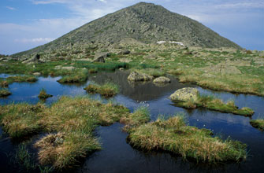

MOUNTAIN CLIMBING DIRECTORY
Mt. Washington
6288 Strenuous
Mt. Washington (6,288 feet) is the highest peak east of the Mississippi River and north of the Carolinas. The upper part of the mountain has a climate similar to that of northern Labrador and supports a variety of alpine flora and fauna.
Mt. Adams
5799 Strenuous
Mt. Adams (5,799') is the second highest peak in New England, offering spectacular views across the Great Gulf and King Ravine.
44.320686, -71.291742
Mt. Jefferson
5716 Strenuous
Mt. Jefferson (5,716 feet) has three summits a short distance apart, in line northwest and southeast, with the highest in the middle. Perhaps the most striking view is down the Great Gulf with the Carter Range beyond.
44.304196, -71.316848
Mt. Monroe
5372 Strenuous
Mt. Monroe (5,372 feet) is the highest of the Southern Presidentials, and is a sharply pointed peak rising abruptly from the area around the Lakes of the Clouds. The summit is completely above treeline and affords fine views of the deep chasm of Oakes Gulf.
44.255036, -71.321483
Mt. Madison
5366 Strenuous Mt. Madison (5,366 feet) is the farthest northeast of the high peaks of the Presidential Range, remarkable for the great drop of more than 4,000 feet to the river valleys east and northeast from the summit.
44.328422, -71.277795
Mt. Lafayette
5260 Strenuous
Mt. Lafayette (5,260 feet) represents the highest peak in the Franconia Ridge and, from the summit, offers a stunning view of the Pemigewasset Wilderness Area.
44.16078, -71.644464
Mt. Lincoln
5089 Strenuous
Mt. Lincoln (5,089 feet), a part of the popular and scenic Franconia Ridge, bears a sharp, rugged peak with excellent views of the surrounding area and an array of alpine plants.
lat 44.148587 lng -71.644678
South Twin
4902 Strenuous
South Twin Mountain (4,902 feet) offers sweeping views to the south of the Franconia Ridge and Franconia Brook valleys.
lat 44.18762 lng -71.554685
Carter Dome
4832 Strenuous
Carter Dome (4,832'), in the Carter-Moriah Range, offers dramatic, close-up views of Mount Washington and the Presidential Range from its northeastern shoulder, Mount Hight.
lat 44.267268 lng -71.179004
Mt. Moosilauke
4802 Moderate
Mount Moosilauke, at 4,802 feet, is the western-most 4,000-footer in NH. The alpine summit, on a clear day, affords hikers stunning views, to the east, of the Franconia Ridge and Presidentials, and to the west, the Green Mountains of Vermont and, in the distance, the Adirondacks in New York State.
lat 44.024422 lng -71.830974
Mt. Eisenhower
4760 Moderate
Mount Eisenhower (4,760 ft.), part of the southern Presidential Range, has a bald summit that offers 360-degree views of the surrounding area.
lat 44.240526 lng -71.350193
North Twin
4761 StrenuousNorth Twin Mountain (4,761 feet), adjacent to the taller South Twin Mountain, offers a challenging climb to superb outlook ledges near its summit.
lat 44.202482 lng -71.557646
Mt. Carrigain
4700 StrenuousMount Carrigain, at 4,700 feet, is one of the highest peaks along the southeastern ridge bordering the Pemigewasset Wilderness Area. An observation tower on Carrigain's summit provides hikers with a stunning view of the surrounding White Mountains.
lat 44.093411 lng -71.446924
Mt. Bond
4698 StrenuousMount Bond (4,698 ft.), the highest peak in the southern Twin range, represents, with neighboring Mt. Guyot, one of the two most remote peaks in the White Mountains. From Bond's summit, there is virtually no sign of human impact in the form of roads or buildings.
lat 44.152806 lng -71.530995
Middle Carter
4610 Moderate to StrenuousA part of the Carter-Moriah Range, Middle Carter Mountain (4,610'), though wooded, rewards hikers 70 yards north of its summit with a view of the Presidential Range.
lat 44.303059 lng -71.16776
West Bond
4540 StrenuousWest Bond (4,540 ft.), a spur of Mount Bond in the southern Twin range, offers extensive views of the White Mountains with virtually no sign of human interference in the form of buildings or roads from the summit.
lat 44.154438 lng -71.544085
Mt. Garfield
4500 Moderate to StrenuousA trip to Mt. Garfield's rocky summit (4,500 ft.) rewards hikers with a panoramic view of the surrounding Franconia Ridge and Franconia and Lincoln Brooks valleys.
lat 44.187374 lng -71.611204
Mt. Liberty
4459 StrenuousAmidst the scenic Franconia Ridge, Mt. Liberty (4,459 feet) bears a sharp, ledgy peak with excellent views of the surrounding area, including nearby Mount Bond and the Pemigewasset Wilderness.
lat 44.1483 lng -71.6768
South Carter
4430 ModerateSouth Carter Mountain (4,430 ft.), in the Carter-Moriah Range, offers a moderately strenuous climb with a wooded summit and limited views.
lat 44.287464 lng -71.16941
Wildcat
4422 StrenuousWildcat Mountain (4,422 ft.), one of the most prominent peaks of the Carter-Moriah Range, is known for its steep, challenging trails and superb views of Mount Washington and the Presidential Range.
lat 44.2501 lng -71.2035
Mt. Hancock
4420 StrenuousMount Hancock (4,420 ft.) features steep, rough trails and is part of the Pemigewasset Wilderness, offering views of the surrounding wilderness from its summit.
lat 44.0801 lng -71.5309
South Kinsman
4358 StrenuousSouth Kinsman Mountain (4,358 ft.) is a part of the Kinsman Range, offering hikers a rugged climb and excellent views of the surrounding White Mountains and the Franconia Ridge.
lat 44.1187 lng -71.7623
Mt. Field
4340 ModerateMount Field (4,340 ft.), in the Willey Range, offers a moderately strenuous hike and limited views due to its wooded summit, though there are outlooks along the trail.
lat 44.1955 lng -71.4228
Mt. Osceola
4340 ModerateMount Osceola (4,340 ft.) is known for its steep trails and rewarding views from its summit, located in the White Mountain National Forest.
lat 44.0069 lng -71.5353
Mt. Flume
4328 StrenuousMount Flume (4,328 ft.), located at the southern end of the Franconia Ridge, offers hikers a challenging climb with exceptional views of the surrounding mountains and valleys.
lat 44.1244 lng -71.6419
Mt. Whiteface
4020 ModerateMount Whiteface (4,020 ft.), part of the Sandwich Range, offers a moderately strenuous hike with fine views from its ledgy summit and the nearby cliffs.
lat 43.9355 lng -71.4487
Mt. Pierce
4312 ModerateMount Pierce (4,312 ft.), part of the southern Presidential Range, has a flat summit with a broad, open area on the east side that offers striking views of the surrounding area.
lat 44.226535 lng -71.365771
North Kinsman
4293 StrenuousNorth Kinsman (4,293') is the second highest peak on the Kinsman-Cannon Ridge. Ledges just below the wooded summit offer great views of Mt. Lafayette and Mt. Lincoln across Franconia Notch.
lat 44.133404 lng -71.736946
Mt. Willey
4285 StrenuousMt. Willey (4,285') is the second highest and southernmost mountain of the Willey Range, which also includes Mt. Field (4,340') and Mt. Tom (4,051').
lat 44.183866 lng -71.42096
Bondcliff
4265 StrenuousBondcliff (4,265 ft.), along with neighboring Mt. Guyot and Mt. Bond, offers some of the most stunning views in the Whites, with virtually no sign of roads or buildings visible from the summit.
lat 44.139841 lng -71.542068
Zealand Mountain
4260 StrenuousThe summit of Zealand Mountain (4,260 feet) is wooded and viewless, but the trip is nonetheless worthwhile when hikers include a stop at the nearby Zeacliff outlook along the way.
lat 44.179311 lng -71.521254
North Tripyramid
4180 StrenuousThe Tripyramid massif includes three peaks: North Tripyramid (4,180'), Middle Tripyramid (4,140'), and South Tripyramid (4,100'). The latter peak is not considered an official 4,000 footer because there is not a sufficient change in altitude between its neighboring peak.
lat 43.973144 lng -71.44289
Mt. Cabot
4170 Moderate to StrenuousMount Cabot (4,170 ft.) is the highest peak in New Hampshire's North Country, offering interesting views from the site of a former fire tower, just southeast of the summit.
lat 44.505963 lng -71.414394
East Osceola
4156 StrenuousMt. Osceola (4,340') is the highest peak in the Waterville Valley Region and offers great views of the Pemigewasset Wilderness to the north. East Osceola (4,156') is the subordinate peak to Mt. Osceola. Immediately to the south of Mt. Osceola is Mt. Tecumseh (4,003'), the shortest official 4,000 footer. East, across the valley, is the Tripyramid Massif, which includes North Tripyramid (4,180') and Middle Tripyramid (4,140').
lat 44.006089 lng -71.520481
Middle Tripyramid
4140 StrenuousThe Tripyramid massif includes three peaks: North Tripyramid (4,180'), Middle Tripyramid (4,140'), and South Tripyramid (4,100'). The latter peak is not considered an official 4,000 footer because there is not a sufficient change in altitude between its neighboring peak.
lat 43.964619 lng -71.440187
Cannon Mountain
4100 ModerateCannon Mountain (4,100') is also known as Profile Mountain, referring to the magnificent profile of the Old Man of the Mountain, an infamous formation of three ledges on the east cliff that collapsed in May 2003.
lat 44.156993 lng -71.698794
Wildcat D
4062 StrenuousWildcat Mountain (4,422'), located in the Carter-Moriah Range, offers dramatic, close-up views of Carter Notch and Carter Dome from its summit. Wildcat's D Peak (4,062'), home to Wildcat Ski Area, is considered an independent 4,000-footer and offers excellent views of Mt. Washington and the Presidential Range from an observation tower.
lat 44.249472 lng -71.22385
Mt. Hale
4054 ModerateMount Hale (4,054'), one of the Little River Mountains, offers hikers an easy hike.
lat 44.221707 lng -71.512113
Mt. Jackson
4052 ModerateMount Jackson (4,052 ft.), part of the southern Presidential Range, has a square, ledgy summit that offers stunning views of the surrounding Presidentials.
lat 44.203097 lng -71.375299
Mt. Tom
4051 ModerateMt. Tom (4,051') is the northernmost peak of the Willey Range, which rises from the western boundary of Crawford Notch State Park.
lat 44.210357 lng -71.445894
Mt. Moriah
4049 StrenuousA part of the Carter-Moriah Range, Mount Moriah (4,049 ft.), boasts a ledgy summit with views of the surrounding area.
lat 44.340486 lng -71.131926
Mt. Passaconaway
4043 StrenuousMt. Passaconaway (4,043'), the easternmost 4,000 footer of the Sandwich Range Wilderness, shares a prominent ridge with Mt. Whiteface (4,020'). A lookout ledge just below Mt. Passaconaway's wooded summit offers great views of the Tripyramid massif to the west and South Hancock (4,319') and Mt. Carrigain (4,700') to the north.
lat 43.954827 lng -71.38092
Owl's Head
4025 StrenuousOwl's Head Mountain (4,025 feet), occupies a narrow valley created by the Twin-Bond Range to the east and the Franconia Range to the west. More than ten 4,000s surround Owl's Head. Needless to say, it is one of the more remote major summits in the White Mountains.
lat 44.144368 lng -71.604853
Galehead Mountain
4024 StrenuousGalehead Mountain (4,024 feet), a part of the Twin Range, offers views of nearby North and South Twin from the Frost Trail.
lat 44.185097 lng -71.573396
Mt. Whiteface
4020 StrenuousMt. Whiteface (4020') shares a prominent ridge with Mt. Passaconaway (4,043') the easternmost 4,000 footer of the Sandwich Range Wilderness. Lookout ledges south of Mt. Whiteface's wooded summit offer great views of New Hampshire's Lakes Region.
lat 43.933815 lng -71.405897
Mt. Waumbek
4006 StrenuousMt. Waumbek (4,006 ft.), is the highest peak in the Pliny Range of New Hampshire's North Country, offering views to the east just beyond the summit, along the Kilkenny Ridge Trail.
lat 44.432677 lng -71.417484
Mt. Isolation
4003 StrenuousMount Isolation (4,003 ft.) is the highest peak of the Montalban Ridge, a subsidiary of the Presidentials, and offers stunning views of the Presidentials - one of the finest views in the White Mountains.
lat 44.214756 lng -71.309466
Mt. Tecumseh
4003 ModerateMt. Tecumseh (4,003') is the shortest official 4,000 footer and home to Waterville Valley ski area. Views to the immediate north include Mt. Osceola (4,340'), the highest peak in the region. East, across the valley, is the Tripyramid Massif, which includes North Tripyramid (4,180') and Middle Tripyramid (4,140').
lat 43.966565 lng -71.556745